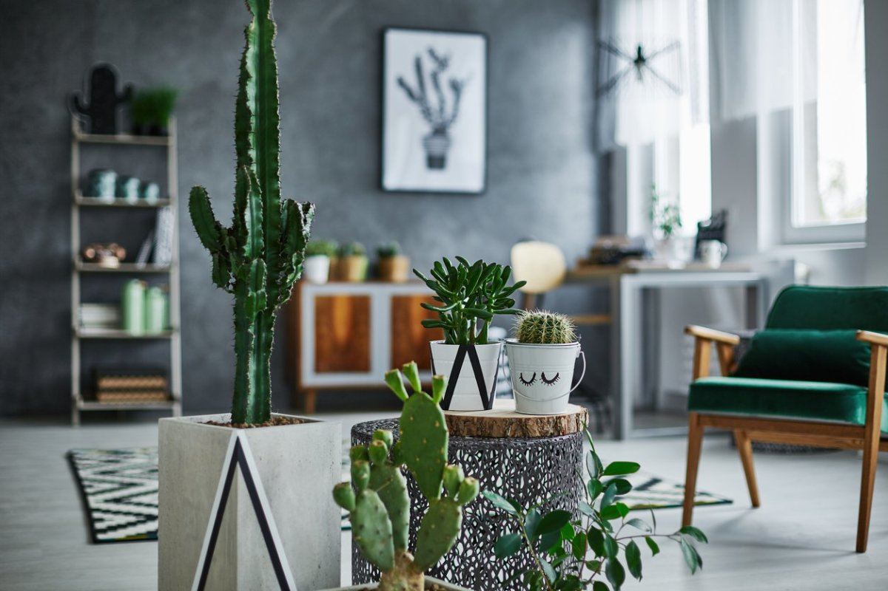
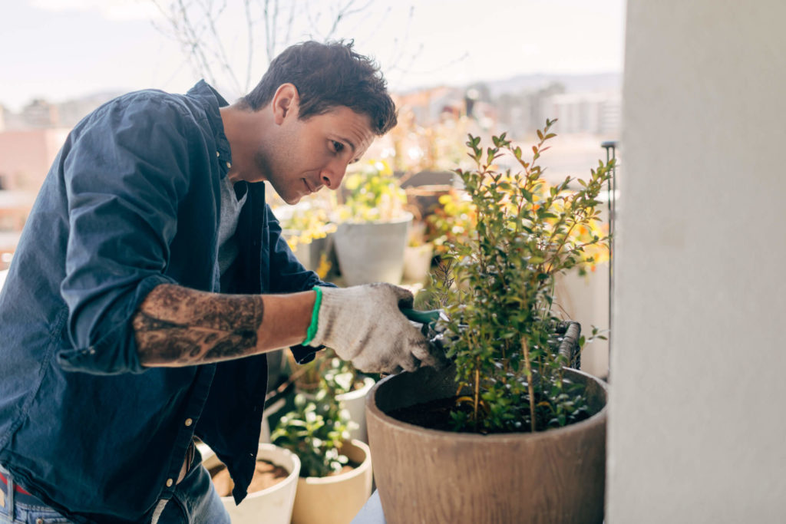
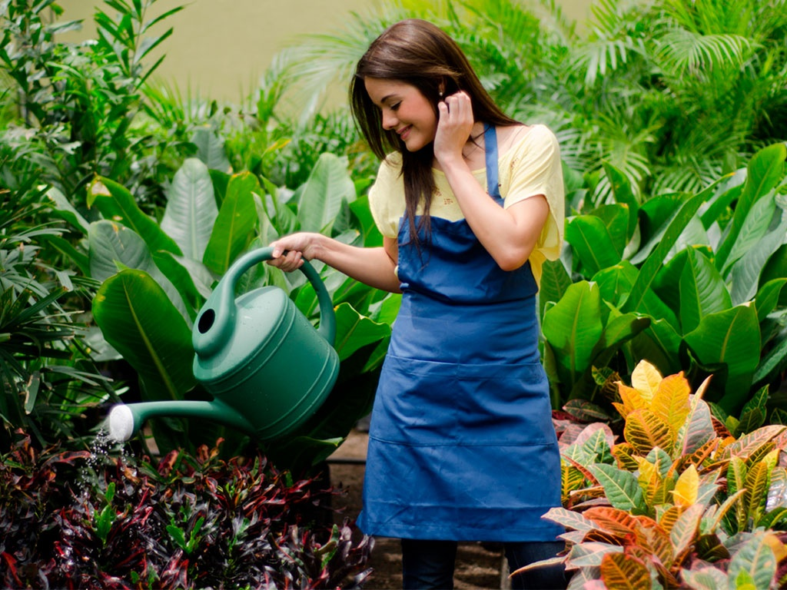
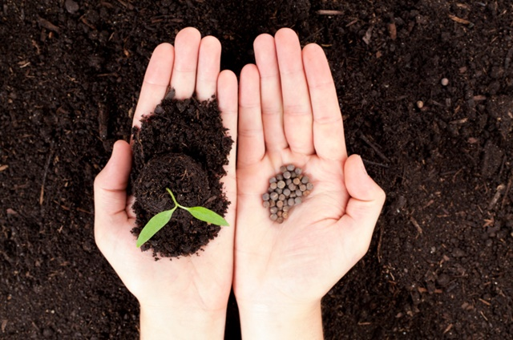
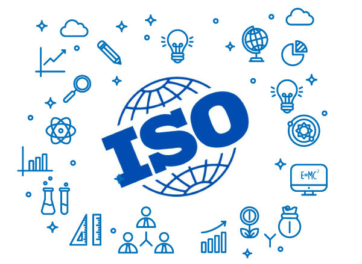

O Projeto Verdemente é uma iniciativa de múltiplas organizações com a finalidade de disceminar a prática de plantio.Nosso objeto é fornecer sementes de variadas espécies de plantas e árvores, além de informações de como cultivá-las. As sementes podem ser retiradas de forma gratuita em nossa sede ou você pode recebe-las em sua casa, pagando apenas pelo frete Você poderá iniciar um novo hábito que fará bem para o meio ambiente e para sua própria mente. |
Estudos comprovam que pessoas com responsabilide em cuidar de algo, por hobby ou necessidade, desenvolvem a mente de forma melhor.Existem benefícios em uma rotina de atenção diária, desde trabalhar memória e concentração, à longevidade da sanidade quando em idade avançada. Plantas e árvores são seres vivos que contribuem ativamente no ambiente em que estão. |
 |
|  |  |
|  |  |
Plantas e árvores são fundamentais para a vida na Terra.Elas geram oxigênio, alimento, fibras, combustíveis e remédios que permitem aos humanos e outras formas de vida existir. Elas também são essenciais para o controle da temperatura da Terra e o equilíbrio e dinâmica da água no planeta. Enquanto realizam tudo isso, as plantas ainda absorvem dióxido de carbono, um importante gás do efeito estufa, através da fotossíntese. |
Certificados pelo organização internacional ISO.A ISO 14000 é constituída por uma série de normas para garantir que determinada empresa (pública ou privada) pratique a gestão ambiental. O principal objetivo é manter o equilíbrio e proteção da natureza, prevenindo a poluição e os potenciais problemas que poderiam ocorrer sob a sociedade e economia. O Projeto Verdemente nasceu como forma de regular o impacto que seus associados causam, além de seu engajamento social. |
RETIREAtendemos presencialmente no endereço que você pode conferir abaixo. Nossos horários são:Segunda a Sexta: 11:00h às 13:00h Sábados: 09:00h às 12:00h |
RECEBACaso preferir, enviamos as sementes, devidamente embaladas, por correio. Sendo este um projeto sem fins lucrativos, você paga apenas pela taxa de frete. Clique no botão abaixo para conferir. |